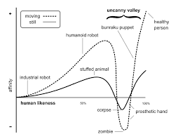
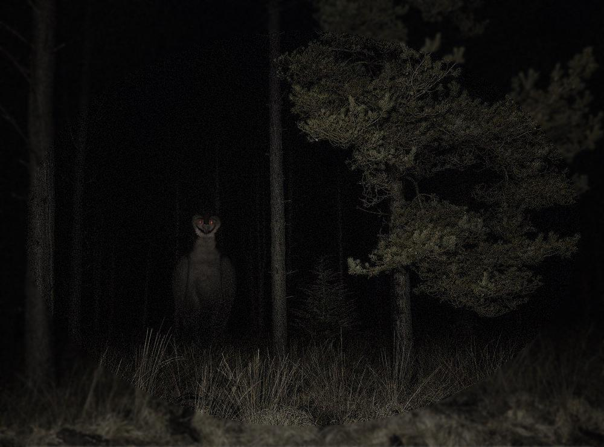
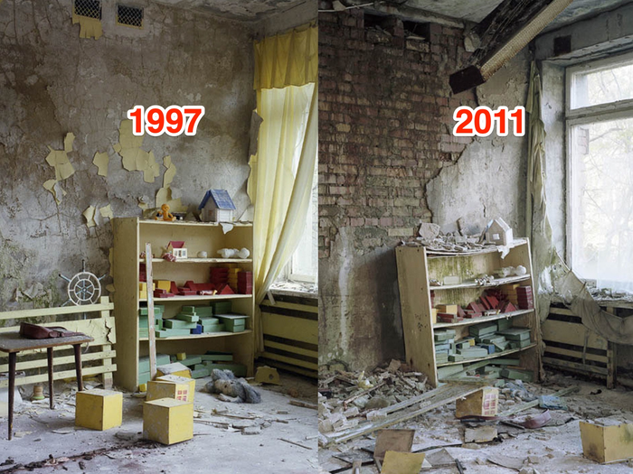
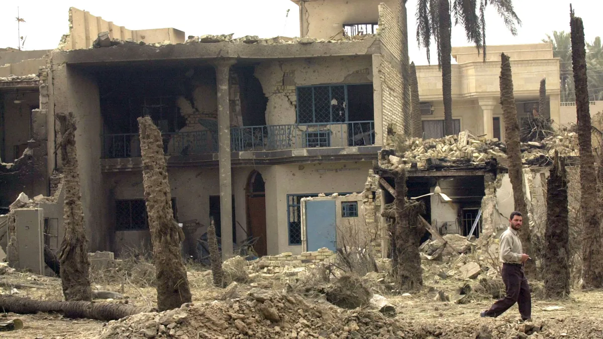
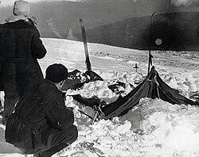
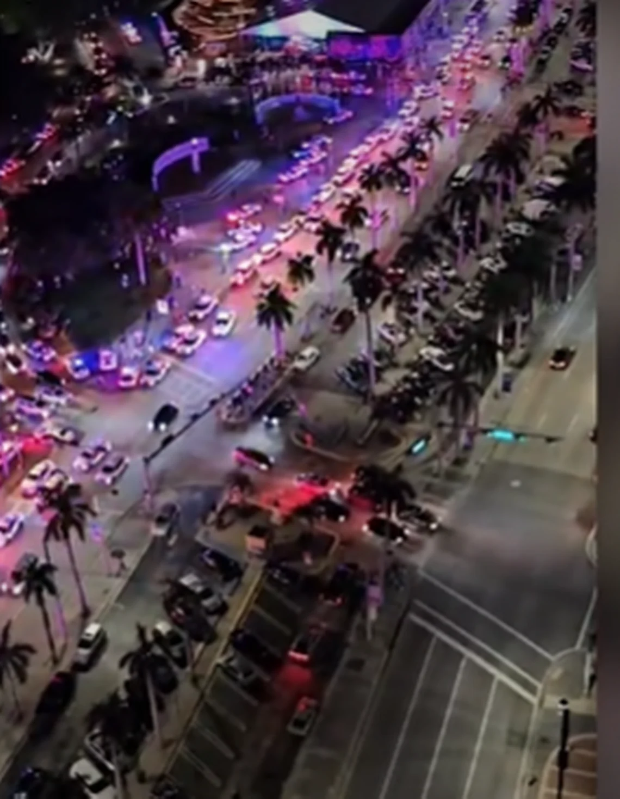

Lobotomy Inc.
Welcome to my corner of the internet.
Now Playing
Resident Evil 2 Save Room Theme
About Me
So, it would be stupid to say my name so instead I'll say a nickname, Morsey, as i often use morse code for my online name which itself has a looong story tied to it, but i am 19 at the time of making this, i have been in IT for 4~ years as of 2026, and this is in fact my fist time with html and so far it seems fairly easy but it might just be a matter of experience ?
Anyway I'm doing this as therapy, cuz a guy will learn html and get a camera from 2009 before he talks to someone about his issues, ah and the camera I'll cover in the hardware section ,I added it cuz i felt like it, its my website is it not?
Well, I hope I'll live long enough to see this grow exponentially and that you get to enjoy your stay here, whoever you may be and however long that stay may last.
Hardware
This is where i cover what hardware i may want to share and any thoughts i have on it
Camera
The camera i have is a FujiFilm FInePix S1730 from 2010 or so, i dont know its exact manufacturing date. But its a pretty neat bridge camera and being a FujiFilm one ,it comes with a very distinct colour composition, makes everything have the colour that any gen-z kid will remember from when they were, well, kids.
Its small but mighty and it obviously captures what others use modern cameras for and spend hours to recreate, one small issue, having paid 20$ ~ ,it cam faulty, original fault was an error that basically took a bit of shaking and hope, now it fails to save after taking one pic, so its a fun thing to hold and mess with buuuut its broken, and i will be buying one of its older sisters, an S2900 series one, practically the same look but eh, what can i do

Photography
Any photo i deem fit to be here for one reason or another
Random Photo
Basically i was listening to some song, forgot the title tbh, but eh you can choose whatever song you think fits, and i was walkin, as one does, and it was pretty late, really quiet night, like way toooo quiet, shit was scary man and i decided to look up a bit and saw this, there were the branches of a tree after winter, and spring, and both sides showed, you had the death of the leafless branches but also life coming back to them, while encompassing the the street lamp, and it had this odd sort of RE2 save room music vibe, and i decided fug it, lets take a pic and get home to edit this bih, and i did, and it came out pretty well, my second ever edited pic tbh, so im quite proud of it too bad the actual camera is dead, i think it would have made it 20x better, but oh well.

Art
Any art i make, yeah thats it, its pretty self explanatory dude
My magnum opus for now
So, i drew this after a solid breakup, 4 whole fucking years of dating and trials and tribulations and all it took was her going to uni getting some fuckass freinds who did nothing but reiterate her hate for men and shit and it made her somehow see me as bad, now, i personally consider myself undeserving of love and a lowkey bitch, hell my very stupidity caused me to loose my dog recently so thats fucked, now im debating wether its work continuing on or calling it whatever and going for the forever sleep, and funny enough the breakup made me not want to die more than anything, but eh c'est la vie as the french say
Ignoring all that shit up above, this is based on my AC, of which i forgot the name off and lost the save file long ago, but at the time of april 2025 i loved it, i still do, its a light and nymble AC, with reverse legs and all, i didnt draw its weapons cuz this sort of half body already took me 4 hours on a random summer night and i was fucking tiered dude, i didnt eve colour it and shit.
But i do hope you like it.

Thoughts
Since its my corner of the internet I'll drop just about anything that is messing with me to some extent
This section will be the most erratic tbh, like no obvious function or like actual titles and shit, maybe ill put this in a hidden tab or some shit so its not as central to the overall website
Reading time: fuck if i know twin Written: 10/06/2026 Notes: yes alcohol was involved in the writing of this, zero research or any formal thinking went in, this is all from the heart So, i wanted a dog, for a few years now, and i wanted a husky originally, but then with my parents suggestion and the internet, i wanted a Malinois, Belgian Malinois specifically, very smart dogs, used with the police and army, really cool. And i did get one, and i wont even bother using the age excuse, im just fucking stupid man, like, im lazy and fat and all that, sure i lost 30kg or so since january, now i made a website before going to fucking therapy and even got a dog, but idk what the hell happened with her, Artemis is her name, yes i chose it, and she growled at me, tried to bite me, it scared me, like quite a lot, but it also pissed me off, and i took her on her morning walk, and she done decided to try and bite me again, and instead of idk, reacting more civily, i pulled her, and hit her, like punched and then even stomped on her paw man, i feel like a fucking monster for it, and worst part is, a fuckass ring camera caught just the bit where i hit her, none of the growling or biting, just me looking like a fucking monster. Now obviously that got me into shit, and i aint trying to excuse my action, like that shit was bad and vile and it show how weak of a cunt i am, but now obviously following all that, she got taken away from me, and by proxy my family, and that hurts even more, and if im being deadass the day it all happened and she got taken away from me i lowkey wrote THE note and planned THE plan, i will not ellaborate, but like fuck man, the house is cold and lonely, its quiet, i dont even move as much now, shit i got 15k steps with her now i get like 2k at best? like fuck dude, im letting myself go, and sure yeah i may have achieved a lot over the past uni year but it all goes away as soon as i fuck up. And of course given the world we live in, i get the risk of a fine and a permanent offense on my record, with about 2-3 months until i get an answer of wether im going to court or i get a warning and move on with my fucking life, but some diddler get what 5 years in protective prison section ? Where the food is better and so is the overall state and treatment, like he fucked a child man, that is fucked, shit that should allow for an execution IMO, but i get fucking told to face the wall and get shot in the back of the head around the back of the precinct. I of course wont forgive myself for this shit, but outside of the grief and depression, which im not pointing to garner sympathy, like that feels narcisistic of me to do, but yeah, I'll be scared of getting a dog and walking on egg shells for the forseable future and for the next few months imma be fucking worried about whats gonna happen to me legally speaking, because of course bureaucracy takes fucking ages and if i either get a stress related heart attack or stroke then its a big oopsie is it not ? But there is a silver lining in this bitch, my girl is gonna get to be a cop, and see that was already in the plan, but she gets one of the best outcomes in this whole fuckery, and when she retires in 10 years, and I'll hopefully still be alive by then, I'll be 29, and im aiming to get her as a retiered dog, which should be fun, but thats gonna take me growing, and obviosly living till that fucking time, but oh my fucking god ending it all seems so utterly enticing, and as a matter of fact to anyone reading this far, first of all thank you, second, if there are no more updates, you may know why, and this sentiment may be repeated on other articles in the "Thoughts" section, research is gonna be a little less erratic overall, but for now, im not asking for forgivness or undesrtanding, im just saying i fucked up and im owning up to it, but man is the justice system fucked, although as far as im aware im lreaving with a warning, and will be doing a plethora of animal behaviour and veterinary study online, and getting me some new shiny certificates, then we are going to attempt some hacking certificates too, this summer about to be busy and this website will get helllaaaaa full my man. Anyhow, i got more laundry to do, and more alcohol calling my name, next article will talk about my experience with ghosts, then we shall add some more research to the research section. Alrgith so, im personally a believer in this, not only because growing up in Romania and hearing folk tales about the "Strigoi" and other ghouls or stories told by people whos faces were grizzled by time itself, talking about picking up strangers who paid in long forgotten currency, that never got back out of cars or busses, or seeing loved ones and talking to them right before getting the gut wrenching phone call saying they have died, but also because i saw some shit myself. Me personally, i have been mildly urbexing a bit (urban exploring, or exploration,its when you explore abandoned structures of many kinds, wether factories and tunnels or just old train tracks long take off the map to see where they lead), and i cant say i have seen anything paranormal, maybe the encounter with a gangrene covered crackhead who was still able to cut my arm lowkey, still got the fuckass scar, but no ghosts or things moving on their own, but at the same time i havent particularly been to too many places, i been to one abandoned clinic, a few train stations with a bit of an underground area, some cemeteries, and thats lowkey it, i dont count building that legit no longer stand, those are just rubble and theres nothing to even see or do, but where i lived there have been deaths, espcially back in my home country, so there was precedent to something like this happening, only difference is that both these events happened before my urbexing days, since one happened when i was 6 and another when i was 10, and then another 2 after i moved from Romania and started urbexing, but they will all get a paragraph each or so. Before i do tell i gotta say the difference between both the first 2 sections of the "Thoughts" part of my website are heavily distinct, but anyway story time. So for the first time i saw a ghost, i was about 6 or 7, and still living in Romania at the time, and at the age of 5-6 my grandad died, of cancer, but whats important is that he had a habbit of forgetting the bathroom light on, dont worry it will become important in a sec. But back to the actual incident, i was just playing in my room, and the way the doors were finished, being soviet era wooden ones, they had a pretty shiny and mildly reflective property to them, which meant if someone was to pass by the room and head into the toilet you would see a mild reflection, now, you wouldnt see exacts but just enough to tell its a human, and that day it was summer, june-july time, and it was about 2ish pm, and while i was minding my business playing i remember hearing footsteps, and the floor was tile, meaning they would be pretty noticable, and then i look at the reflection in the door in the corner of my eye and see a reflection, since that day it was just me and my grandma home i thouhgt she just went to the toilet, and that was further pushed by the fact the door closed, and the light turned on, then about a minute later i hear the door open, look up to see if my grandma would pop her head in to see how im doing, since i could not see the corridor from where i was sitting, and i see nothing, but i see that the light was left on, and i still heard the sink running, also the toilet was flushed and i could hear the old soviet piping working to refill the tank, and i was like "eh she gonna turn around in a sec and turn it all off, she probably still has something to do", now theres an issue with that, i waited about 5-10 minutes, and the house was fucking dead quiet, like no movement no tv some place else, just my tv, and the bathroom sink, and im like, damn no way shes forgetting too now, and so i get up and call out to my grandma to tell her she left them on and im gonna turn the sink and light off, no response, not even a fucking whisper, and i go into the bathroom, turn the sink off, and as im about to turn the light off and close the door behind me, i hear the front door of the house open, and i call out asking "where are you going" and i get a "im not going i already came back", and i ask "what you mean" to which i get an "i went to the shop real quick, hope you didnt miss me too much", now the whole bit about going out and going to the shop is not an issue, i dont mind really, the fucking issue is that there was a white humanoid reflection that went into my fucking bathroom, flushed the toilet, used the sink and even turned the fucking light on, WHILE I WAS COMPLETELY ALONE MY GUY, my head cannon about that, especially while getting into urbexing and the paranormal was that it was my grandad, especially cuz it happened 2 ish months after his death, so if we are being deadass it is plausible, but i gotta say shit scared me so much that even at the age of 19 i can very distinctley remember it, even to some smaller details, and thats kinda fucked yo. And for the second one, still in Romania, different house this time, an older one, an actual house and not an appartment, it has history that saw death especially being from around the 1700's and having seen its fair share of war and blood, but being about 7-8 now, i was sleeping in the same room with my mom, cuz it wasnt the biggest of homes, but i will add that my mom is a very light sleeper and just as much s breathing a lil funny near her while she sleeps will cause her to ask whats up from her sleep, now i was sleeping behind my mom and she was sleeping on the edge of the bed, me being pretty small i could fully hide behind my mom, and for some fuckass reason on this November~ winter time at like 2 am, i couldnt sleep, so i crawled out of bed slowly and got some cars to play with till i fell asleep, now this house was modernised to some extent, but the doors were still the old ones, like im saying steel core and heavy hardwood doors, that took some heft to move, and were lierally immovable to any level of wind draft, and also being winter in eastern Europe a open window or door at night was borderline suicide, even more so in the countryside where wolves may wander around and night and the cold itself was sub 10 fucking degrees celcius, but as i was playing i decided to look up past my mom at the door, i dont know what primal instinct made me feel like im being watched but the first 2 times i didnt see shit, but the tird time, i see something, a human shaped head, one small issue, it was fully fucking white and was seemingly glowing without casting any light around it, and even worse we had a cat, a pretty sizeable Russian blue boy, and he was next to me this whole time, and HE WAS ALSO LOOKING AT IT, like let me be so fucking deadass if an animal is looking at the shit im looking at and, especially a fucking cat, arches its back and starts wagging his tail, im fucking done yo. But it gets worse, i try to wake my mom up as the cat jumps out the bed and aproacehs the door, he was wagging his tail and he just decided to sit there, and uh, my very light sleeper mom, was not fucking moving at all, like not even the slightest noise or anything outside of her breathing, and as i look back up, THE FUCKING DOOR IS OPEN AND THERE NOW IS HALF A WHOLE ASS HUMANOID SHAPE IN THE DOOR FRAME AND TEH CAT IS HISSING AND GROWLING MY GUY, so my very obvious child instict was to hide behind my mom to hope it goes away, and i pop my head back out and its fucking standing off the side off the door, like its holding it fairly open but isnt fully in the room, like someone hanging off the door while checking in on someone, and then i hide again, and i pop my head out once more, and the door is fully open, STEEL CORE HEAVY WOOD DOOR WITH NO WIND ANYWHERE IN THE FUCCKING HOUSE IS FULLY OPEN, and the whole corridor is fucking dark, like pitch fucking black my guy, and the at jumps to me, and starts purring and licking my face, and from there i think i fained or some shit cuz i have zer recollection of what happened after or if i ever mentioned this to either parent until the age of 17 when we were talking and they told me i never told them nadaaaa, and oh my fucking god i can even tell you the car i was playing with was a lightning McQueen one, that had him with his tongoue out, from that one scene in the first movie where he jumps over some shit i think, but thats story 2 and to this day telling it gives me chills. Now for the post move ones and from my teenagehood, first one was in Wellingborough, England. And it was at a very tumultuous time in my life, and the are itself was farily recently built 90's or so, and it was a fairly quiet neighbourghood with little to no crime and death tbh, so in terms of normal expected reasons and explanations theres not much tbh. But at this time i didnt know of shortcuts and ways that would not only keep me off dingy alleyways but also get me to school or wherever i needed to be faster, but i was doing judo at the time, and it would start at 7pm and training would end at like 9-10pm sometiems, i was about 13 when it went down, like right before covid, early 2019 or even late 2018, and the thing is the alleys were pretty dark, and lonely as fuck, a lot of the lights were non-existent or just broken, with the fucking copper ripped out the pannel, this really fails to seel this as a decent area of a town huh, but anyway i was walking, no music just my own thought and worries really, and i wouldnt often look behind me, but this night i kept getting this fucked up feeling of being in danger and watched, and i thought, maybe to much internet horror stories or horror games, so i kept walking, a little faster at that, and also checking behind me, and one of these checks, after i passed under a working lamp post and turned my flashlight on to see where the fuck i was goin down this one alley, cuz i wasnt planning on tripping up on branches again, i see a figure, fully black, no facial features, for that matter no features at all it was just a fucking shadow without something to cast it, and im like, "hmm, fuck me i guess I'll walk a lil faster", so im fastwalking at this point, and i still had about 15 minutes of labyrinth like alleyways and fucking dead ends, but as im walking i hear some pretty loud and fast footsteps behind me, i didnt look i decided to mind my own business, but uhm, i then hear those same footsteps rapidly turn into a running sound, some form of clicking and growl, and that made me turn the light off completely and turn that 15 minutes of fast walking into 2 minutes of adrenaline filled running, i get to my door, somehow hit the right key, in the hole first fucking try, lock the door, keep the lights off, sprint up the stairs and grab this bbgun i had, better scare them off if it came to a breakin tbh, but i was stood at the top of the stairs all lights off, door locked, holding a nasty fucking angle, and i heard scratching at the door, then the door handle get manhandled, i did not think to call the police tbh, i think i was scared me simply calling would attract that things attention cuz i have been chased by people before this incident and after, like humans, and there is a distinct difference between some crackhead chasing after you or some security guard and whatever that fucking thing was, that shit was not human, but i basically pull all the blinds about 30 minutes after the door went quiet and a distant siren brought me back to reality, i check the home with a kinfe too just in case andi deemed it safe, and i spent that whole night watching anime, my dress up darling specifically, with all the lights off, and i barely caught a bit of sleep at like 6 am when the sun came up, then i had to fucking get up to go to school at 8 and i ended up sleeping in class really, but shit had me running the 45 minutes home within 10 minutes or so, but i did quit judo about a year after. And the last one, is by far the tamest tbh, i was 16 at the time, first year of college, was doing Applied science, and the college was this pentagon shape, and it had some windows that allowed you to see some of the other sections of this pentagon but it never allowed any shadow to be cast from one corridor to another, and the way the light was shining in ths instance teh only way a person would cast a shwdow would be from the outside to the inside. ALl that presetting is important, as this not only happend in a place where it was physically impossible form a shadow to be cast from much of anywhere unless the person would be physically visibly there, and also this was on the 4th floor of teh college, so it couldnt even be someone passing by outside, but i was walking with a buddy, heading off to our final class for the day, on a october afternoon, and this was after another pretty fucking rough patch in my life, and as we were heding up to this corridor, we had to open some double doors, we look down that corridor, and see someone walking down it, this was a straight corridor with no doors, or other windows except one at the door me and my friend were standing at, not even cabinets ir anything where a person could hide and i hold the door and wait for the person to pass as i take my phone out to check the time and my buddy gets some text, i see a shadow as if someone passed by me fast, but i feel no gust of wind or anythign really, i look up and the only other place where someone could have turned to hide or get out of my line of sight was a solid 30 seconds of fast walking away, meaning that in the second or so that it took me too look up and see who may have passed by i should have still seen then, but the entire fucking corridor was EMPTY, LIKE ABSOLUTELY LIFLESS, so i look to my buddy and ask "did you see someone walk by?" and he said "no, but i saw them walking up to us so thats why i stood next to you, why?" and i said "because i didnt see anyone walk past or down the corridor, did you see anyone?" and he looks at me a sec, walks towards the only possible direction that person may have taken and sees nobody, this entire exchange lasted 10 seconds so still well within the time it would have taken someone to get to any place that would take them away from any reasonable line of sight or time frame to explain where they went, so my buddy get back to me, quite pale now, saying "shit i guess they went down some room in there", pointing to the corridor we were holding the door open for, and we both look down it and realsie, there are no other doors till the other end of the corridor, and these were heavy fire doors, which would close with a pretty noticable thud, but i then ask him if he saw the shadow that was clearly human and was cast towards the door we were holding and he says "yeah thats why im shitting myself cuz i saw the person you saw and the shadow but never the fucking person passing by us or even going down the corridor", so we kinda exchange an uneasy look and a forced giggle and we just make the rest of our way to the class, never to speak of this shit again. But this is just about all my current experiences, if there will be more i will either make a new article here or just aim for writing here, these are not going to have any evidence as there is none, and 3 of them happen with just me all alone, and the one where i have a witness i no longer talk to the guy, but im not trying to prove ghosts tbh, im just putting my experience and opinion out there tbh, i do hope you mildly enjoyed reading this, whoever you may beAbout my puppy
My experience with the paranormal, a personal note to the "Paranormal Research" in the "Research" section
Research
Anything i decide to hyperfixate on and write about really
Kenopsia and its ties to grief, and liminality
Reading time: 10 minutes
Written: 09 June 2026
SO TO PREFACE ALL THIS, this is an informal paper, there are some book names and statistics used, but i didnt faact check them much, and i wont either, but you are not getting a deep and fulfilling and full of data and research sort of article, youre getting someones feelings and educated opinion on this, but mostly feelings, kenopsia is a feeling after all, so its only fitting its explained by someone pouring their own feelings into this
So kenopsia, weird word, its literal meaning, from "The Dictionary of Obscure Sorrows", is in short The Eeriness of Places Left behind and is described as follows:
You can sense it when you move out of a house - noticing just how empty a place can feel.Walking through a school hallway in the evening, an unlit office on a weekend, or playgrounds out of season. They're usually bustling with life, but now, lie abandoned adn quiet." Now, as i am 19 at the time of writing this, i finished highschool at 16, so 3~ years ago, and i feel like i did not feel this when i finished because of the speed at which modern life moves at, but in writing this and other late walks i realised that this is just what I told myself, in reality i felt it, it was the final day, we already were out of school for maybe 3 weeks at this point since all teaching stopped, and it was just exams now, and we had this big assembly, with gongratulations and final goodbyes and tears, and see i walked around a bit, then went out the door for one last time, and i think the worst part is that, i only spent 1 year at this school, i never truky got to have my highschool years in one spot tbh, first year was in london, second, third and fourth were in wellingborough, 1 of which was during covid which gave me an even higher apathetic disconnect from it all, and the last year was in northampton where i spent about 5 months barely talking to anyone, family included, but by the end i was doing better emotionally and mentally, and yet, having only spent 1 year, hell even less considering a school year does not go for a full 12 months, i still felt odd, like going back to my home country, and seeing the places i used to play at as a kid, changed, and with no kids, matter of fact i have a whole trip planned, where i go to all the places i used to live, and just wander, nothing more, maybe interact with 1-2 people, but just wander, and i hypothesise that the feeling of kenopsia will be the most prevalent, as i personally see that a part of this feeling isnt just the empty places, but seeing the fact that they changed in your absence and are just as empty as the time you las set foot out of them.
Another big idea i have is to take advantage of the photography section of ,my website and go to abandoned places, especially malls since as a 2006 kid malls are a big part of me growing up, and post covid and also moving away from eastern europe to far west past the long forgotten iron curtain, a lot of these were left behind, my current town has a pretty big mall, and only a single section is still mostly alive, the rest ? Closed down stores with empty promises and many that dont even hold their original logos and brand banners, just the local council posters and banners, and see, anyone who might come here now wont ever know of the old section of the mall where the local warhammer shop was, and the first time, my now best friend, introduced me to warhammer and showed me some of the minifigures.
That was 2~ years ago, the store is long closed and everything to do with it is long long gone, just the room itself basically, and i only just started my first few warhammer minifigs now, i need to paint 5 more and i have some decent basic units, but i digress, quite heavily so, the point of all that yapping was to not only better explain the feeling of kenopsia itself to myself and the unfortunate person who stumbeled upon this website and its contents, but also to possibly jog your memories a bit too, yes you, the reader, a paper like this can surely be kept professional and to the point, but i hold the opinion that feelings have to be conveyed in a way that actually connects with a reader, moreover there is no corporate board or some fuckass algorithm i need to follow, so this gives me the power to do as i see fit.
Now, as much as kenopsia, by its meaning as seen in The Dictionary of Obscure Sorrows (hereby referd to as TDOS, i aint writing all that every time my guy), and my stupid little storytelling, this feeling is mostly used to describe empty places, eg the house right before moving, and the school after hours or on the final day, but, unless theres another feeling in TDOS that covers this, the ffeeling of kenopsia does not mention the people themselves outside of just a general note, by that i mean, kenopsia does mention the lack of people yet it does not bring it to a personal feeling, in school you didnt really know or liked everyone did you ? No shame, me neither twin, but the lack of all the people you personally knew and tied to the place, make their absence, further emphasise the feeling as a whole, and i believe this could be tied to the feeling of emptiness following the loss of someone.
This is where it gets a bit more serious, since death and other such topics will be discussed, the top was lighthearted for a reason, wether i fully intended it or not tbh.
But the feeling after a loved one is gone, wether death, and its many causes, or they left your life, broke up, fell out of friendship, divorece, sure there may be anger, resentment, especially if the person is still alive, but even then there will be a point where our inherent humanity will make us look at those places and remember the people. If the person is alive you might call them and tell them to "come get their shit", but if they are dead, there wont be a person to answer that call, the phone may still be available, and charged, on a nightstand with an alarm someone else snoozed because its original target is now gone, but the person ?
No longer there.
So, kenopsia, although a non clinical term and as part of a book not recognised as part of any diagnosing or treatment procedure, i believe that the overall meaning and its ties to feelings of emptiness or places that are empty without the peopel that made them alive, can be tied to depression, specifically depression post loss, yes grief falls here too, but grief can and will go away, but unchecked anf poorly managed or understood grief can fall into depression, and i believe taking this into consideration can help with dealing with grief and depression following grief, now i will say this, although late, i am not a psycologist or a professional in this field, im just a young adult who is going through some shit, and this helps me and i hope having this here may one day help another person, hence why i kept it without references, or any heavy clinical terminology.
But now that we got over what kenopsia is and what i believe its ties to grief and depression are, i think its time for liminality, so that deserves its own extended section.
It originates from the latin word limen, which means threshold, and that is because liminality is meant to signify a point of transition, a point stuck in time, like the bit of kenopsia that talks about the school (yes if it isnt yet obvious schools are a very big and general way to explain all this i dont have that many options on hand please) where a BIG chapter in your life ends, and you sort of just walk out like any other last day of school before summer, however, you dont often go back now do you ? Sure there are some who do, but if we bring statistics into this, (my actual expertiese), there is no high level data, but at the highschool level and other general education levels the odds of someone becoming a teacher at their own school are of about 2% (i cant be asked to say where i found it from my guy, like, i already lowkey cried at the death bits, you fact check me if you want), and the amount of students who become teachers is of about 5%~, althought much info on any of this is genuinely hard to come by, but the odds of going back to that school and staying are low, (holy fucking side tangent dude, take this guys pen away) so seeing games, or images, or any sort of media of empty clasrooms, even more so if they have similarities to the ones you studied in, will evoke the feeling of nostalgia, and moreover, kenopsia.
You will reminisce about those days, however distant your age may make them, and yet, if you ever go back, or even seeing the images themselves, makes them feel..... off.
Your friends from the 4th seat in the 3rd column on the right side of the class are most likely no longer in your life, and if they are you reached the stage of "hows the wife and kids" and not "hey so can you ask your mom if its okay for me to come over", you passed that threshold, yet part of you will forever remain there, and kenopsia greatly ties to it, as it inherently means the absence of people from places that didnt move on.
Now to bring it all together, kenopsia ties to giref, depression (that has as a root cause grief), and liminality, by its inhernet need of transitional phase and areas and the loss or lack off people, especially those close to the individual. And liminality heavily relies on a closness to the viewer, and grief and depression are also extrememly heavily reliant on the individuals experience and overall life, and kenopsia cannot work without any of these.
So this end this yapping seesion, kanopsia heavily ties into liminality as they both rely on the familiarity that humans give to places and the lack of people in them, and this also heavily ties how people griev when being presented with liminal ideas or space and how depression, and many people diagnosed with depression will find an eery safety in liminality, and by proxy kenopsia (now i may not have been diagnosed with depression, and im not self diagnosing, but i can ssure you, when grieving and when genuinely having been put the fuck down by life, i go back to games i finished that are empty, or reminisce over my past, and it helps but it can make it all worse at times, hell making this website was a way for me to enter some level of liminality within the internet itself, how long has it been since you heard of or went on a website that was not only made in the past 2-3 years but actually was something hand made, from the heart, just for the sake of it, no algorithm or clout chasing, just how it used to be, in the 90's, long before me, or the 2000's and 2010's, when i grew up, and the internet was just a bunch of people with some sort of computer and likely a landline connection rather than proper ethernet, and even then, it was just someone, on the net, and i want to do that, i did mention this is lowkey therapy, stop beign so judgy gee, im realising all these editors notes may emphasieze my statement of considering myself a bitch)
Paranormal Research (Non-Practical)
Why people see ghosts
Reading time: 20 minutes
Written: 10 June 2026 (a lot of yapping i know)
Notes: alcohol was consumed before writing this, in order to write something else, so if the writing refelects this, i do apologise, but it was written in a few batches and the alcohol wore off, so i got to get hella invested in this tbh
So to preface all this, Im no psychologist, but i have been touched by the tism, so this greatly interests me, but do take everything i say with a heart serving of salt
Pareidolia
Pareidolia, according to wikipedia, is "the psychological phenomenon where your brain percieves a specific, often meaningful image or pattern in random, ambiguous, or unrelated visual and auditory stimuli", and personally i would add smell too, but that one is tougher than i think to actually cover under pareidolia. Now outside the fact its one amazing Kevin Sharewood song, it is also strongly related to the paranormal ane belief in ghosts, because pareidolia is often what makes us see 2 lights in the night that are oddly close to one another seem like unmoving eyes staring at us, and the weird shaped chair with clothes in the corner of the room at night to look like your worst imaginable nightmare, or some odd relfection in a pane of glass to look like a ghostly face staring at you from the darkness outside, and it is often a pretty reasonable cause for a lot of folk tales, such as many indigenous stories about spirits in the night roaming the forest, they are often just nocturnal animals that have a tendedncy to hold very reflective retinas, and with out inherent fear of the unknown and our evolutionary fear of the dark, many human tribes, cultures and beliefs that there are things roaming in the dark, and those are just the spooky scary examples there are cute ones too, like a miata face, it looks like it has eyes and its grill looks like a big innocent smile, or the weird splash of late wine on the carpet at 2 am that wont wash off looking like the side profile of the late queen Liz the second, and as the title suggest im here to explain one of the bigger reasons as to why people see ghosts, and pareidolia explains quite a few of them, or makes them seem less like definate proof of ghosts, and with everyone carrying a camera in theri pocket and plenty people filming just about anything every day, there are still plenty points where it cant simply be explained as a trick of the human mind, but theres still the matter of the fact that, pareidolia is something we seem to have evolutionarily gained, since we have pattern seeking brains and it can help us better spot patterns and keep ourselves safe and avoid any sorf of preadator, but it also heavily turns against us.
The owl butterfly for example, it carries the patterns of an owl and often can even seem to have eyes, and it not only scares of many predators but it can very much be the root cause for many folk tales of monsters in forests.
As the figure above shows this is just one example of natural mimicry that can very well be one of the reasons we see faces and eyes in things that dont try to or are not of any danger to us, and are inherently just scaring us off the same way that most prey animals are, but see, prey animals just instinctively know that big shinny eyes is bad, we humans take that a bit further and try to justify and rationalise that further, which then turns into folk tales, and ways to keep children home, and away from forsets where they can get lost, hurt, or killed, and given that a lot of these are instilled in us from a young impressinable age for our own safety it is again highly likely to be a result of inherently scaring children into staying close to the fire, where it is safe, but its often that the adults are more scared than the children.
In the bellow figure there is a flower, this is a withered flower that does not usually look like this, but in this case the first image that comes to mind is that of a human skull, and this could be plainly taken as a cool flower at face value, or can be taken a step further and rationalised into a bit of a weirdly sympathetic interpretation, that being that in dying the flower ended up turning into a skull, as if showing to the outside world its end, in not only the loss of its colour but by the very shape it created being one that has been used for milenia to represent death in humans, the skull, but again the way in which humans can not only see patterns that dont truly have a meaning outside of our own personal interpretations and views, we can also empathize and phylosophise these as being nature given signs, or a way in which the world communicates.
This can all be seen as a simple byproduct of our pattern seeking brain evolution, or an evoliutionary trait developed from having to see things that act as other things, or maybe just a form of comfort from the many scary looking and deadly things we had to evolve with or overall outlive
The uncanny valley
And all that perfectly segways us int the uncanny valley, where this is very specifically meant to signify something the seems human, but is not quite human after all, which can and will 100% make us see weird humanoid figures or shapes, especially in the dark, one of our biggest vices if im being honest, despite our gigantic head size we couldnt fit any major nightvision, but instead we made fire and in maybe 50000 years use electrons to excite photons to give us better green or white light and stopped using photons to see in the dark but instead infra red light as flashlights invisible to our naked eye, all in hardcore btw.

Now Zombies, and cryptids fall into this, and either people having to stay up late to watch the campfire, and being awake with little to no sleep at night, can heavily play with a persons mind, and i can say from experience on about day 4-5, sometimes even day 3 of 1-2 hours of sleep or no sleep at all, outside of the mood swings and memory loss, the night time is when you start seeing shit in the shadows, oddly similar to the figure bellow, even worse if where you are looking theres little to no light, it lets the already stressed and tiered mind, make you think you are in danger, and it is a big reason, along with pareidolia as to why we see things, we get jumpy when tiered and stressed, now pair that with the fact humans are capable of not only imagination but also vivvid imagination, and the more advanced a persons imagination the more they tend to be open to this, even worse if a person with any schizo-psychotic halucinations or overall hallucinatory conditions gets too tiered or stressed, or even worse is in a state where they just start seeing things, but again from personal experience its genuinely terrifying seeing such a person tell something its not real, and trying to calm them down that they are right and theres nothing there, when a whole mahogney chair moves on its own, and you and that person are the only two in that room, and most hard to see or mostly invisible strings are going to break because of the overall bulk of the chair, but still in hindsight this is a not very storngly explained revolutionary trait, as i think many of us have hear "we evolved to spot things that looked human but were not, yet outside of folklore there is no actual known and documented being that looks human, and isnt, and is most importantly dangerous to us", because a butterly that can mimic eyes or a human face is not an inherent danger to us, but something that can seem human and isnt, can and will be a major danger to humans

Abandoned places
And another good segway is in abandoned structures, no matter their purpose they were built by humans for humans, and the very way we humanise inanimate objects and structures gives not only the decay of a building but the very cracks and its very lack of human use or settlement, a sense of unknown, and a uneasy eeriness, compounded further by often not knowing why it was abandoned, a factory may have simply gone bankrupt and faced no accidents or deaths, but at the same time a house seemingly left in a hurry could have been the "civil" front of a scrupules serial killer, or such as the homes of Pripyat, Ukraine, following the melt down of the nuclear reactor.

As the picture above shows, its a 2 fold piece, it both shows the loss of colour and how people can and will leave in a hurry, leaving major parts of their life far behind them, often even forgetting what happened or not even recognising anything in this image due to the damage and age of the place, moreover given that explorers were allowed and many teenagers and young people tend to illegally make theri way into the outer exclusion zone, as it is not as dangerous as any of the areas near the sarcophagus built around the reactor itself, it often means security is pretty lax, now with the current world events its a different story that i wont get into, politics are not something i want to majorly cover on here, even more so current politics, historically speaking sure but current no, anyway back on track, the amount of death and the fact we still dont 100% understand all types of radiation, and as much as we understand it 100x better than when this accident happened it doesnt mean we still have teh full picture, after all science is based on constant discovery, meaning something that seemed right 20 years ago turned out to be a gigantic oversight.
But the overall ideas of the average person when it comes to radiation, and the overall suffering that dying of acute radiation poisoning ism where you literally decay and burn from the inside out slowly, and in Chernobyls case, the firefighters and majority of first responders or people in the immediate vecinity of the reactor recieved such a gigantic does of radiation that they started emanating a major fraction of it around them and have greatly affected the very people who had to try and help with their suffering, and again tying it back to suffering, abandonment and suffering plagueing a places history will give rise to many stories regarding seeing shadows, and seeming like people still wandering the streets, which could be the above discussed pareidolia and uncanny valley, or actual people, maybe even left behind dogs, or a combination of fearing the radiation and the fact its a ghost town, making people be a bit more jumpy, enough to start seeing things.

In the figure above there is a long destroyed home in Iraq, now im not here to talk about the politics or the history and reasons of the Iraq war and the US involvment, what i am here to mention is that context is key, to all the topics discussed so far, pareidolia is often the result of simple coincidence and pattern seeking brain or unintentional mimicry, and the uncanny valley is a possible byproduct of having evolved with such beings and glithces to make us believe in something that seems human or the non zero possibility that there may have been something that preyed on humans and did so by mimicking us, and worse humans are often capable of high levels of mimicry, many people ae capable of making bird calls or other noises for instance, and then the abandoned building perspective, a factory left behind because of bankruptcy may gain a local folklore from people seeking to get reactions and make the place seem cool, even if its just a place that was left behind in a major financial blunder, but a home in Pripyat may ellicit a diffrent response or even more belieavable stories due to the documented suffering in the region or that specific home, and the same thing can be applied to the home in Iraq, this country has seen atrocities, not speaking of very historic ones, but the use of white phosphorous and its destructive capabilities and its very high level of inflicted suffering, along with different types of munitions that tear flesh apart and often leave a victim bleeding out for hours long before death finally takes them, and the very young soldiers sent against their will, who are scared and just want to get back home, away from this god forgotten desert, dying along side the very women and children being hit by different types of ordinance, give this single picture, a contextual level of suffering so high, that it seems impossible to not have ghost stories and people speaking of souls left behind an whaling due to the pain they were taken out in, and contextually speaking the general religion in Iraq is Islam, meaning theres the inherent religious belief in jinns, Nasnas, The Ghul, and many others, they could have easily been the result of seeing a person get cut in half and whats left of them still clinging onto life for as long as there was blood left, someone being burnt alive, or many other horrific ways to go, even back to Pripyat, the suffering of the firefighters alone and those that have seen it could have easily made stories or in a trauma filled response, could have rationalised some sort of paranormal reason for some of the suffering.
And overall, context greatly covers and emphasizes the reason behind a lot of stories, beliefs, and folklore, atlthough from both personal experience and just general belief, and the inherent fact i am human and i will be biased, it is factually part of our very nature, i believe there still is space for things that cant be so easily explained, althought im not trying to say any of the suffering i have spoken about is some divine retribution or some other shit, what i spoke about is vile and as humans we should strive to be fucking better, unless it was an accident, and even then if the accident was the result of gross negligence then that should further push us to be better, but i am saying sometimes, there is no death, funny looking bush, or other genuine reason to explain why there is something human looking standing on your fence without having any obvious features and while sitting under a genuine strong LED light, which should make it crystal clear as to what the hell you are looking at
A superficial look into the psychology of believing in ghosts
Now having touched the generational trauma and overall contextual experience that could explain much folklore and responses to the uncanny valley and pareidolia adjacent experiences, i think its time for a bit of skinny dipping into some actual psychology, i will be giving a few resources this time, this is pretty important.
2 things i wont give entire sections to are confirmation bias and apophenia, confirmation bias is a big reason why people can believe in the supernatural, and a big reason why many many paranormal shows tend to have a non believer, as someone who does not believe int the paranormal is more likely to find a genuine explanation for a video or a sound, or any other experience that a believer may find as evidence, and as mentioned before, our pattern seeking brains often fall into confirmation bias the more we see something, another reason why the phenomenon know as an "Echo chamber" exist, and then apophenia is similar to pareidolia, and are often referred to together because of their overall similarity, but it means seeing connections where none exist, and in conjuction with confirmation bias and pareidolia, we get a pretty solid triad, one that can absolutely prime a persons brain to seeing something as evidence of a ghost, such as, a weird reflection looking like a face, followed by a cold draft or a "sudden" drop in temperature that is inherently a fear response, but a person may take it as a sign of a ghost, and ultimately the confirmation bias may make the already scared persons hightened hearing will make the weird water drop from the kitchen sink that their brain cut out as it was overall unimportant also a sign of ghosts, and so on.
But i do believe there is a pretty solid core, a very human core to all this, "The Need for Meaning and Control", the inherent fact that we not only fear the unknown but also a lack of control is highly disturbing for 99.9% of humans, and even arousing to some, is in my opinion a big reason for the belief in the supernatural, psychologically speaking at least. This is because things "moving on their own" is a lack of control, it could mean a loss of memory, or other things that can overall make a person subconsciously feel their control slipping, we humans are very fragile while at the same time being extremely versatile and overall adaptable, and yet a simple lack of control and social influence and suggestibility, can lead to a person attributing their forgetfullness to a ghost, or the trauma of seeing a horrific end and the human minds memory distortion can make that sort of death to create ghouls in the dark, which is a fairly normal response, given the human drive for survival and part of that being the mind trying to protect itself from further harm by making it seem surreal, mystical even, i personally can say i have experienced some horrific ends, and i have been the final face a person saw and voice they heard, sadly i was not able to save them, as it was beyond me, but the nightmares didnt agree with that ratinal response, and would not only give me nightmares but also made me attribute some things i saw around me to ghosts at times, and another perspective would be as a dismissive response like, something going wrong in life and you say "fuck it we ball" a response tied to this entire essay would possibly be "its those damn ghosts again".

And finally i want to say, i do still believe in ghosts and cryptids and other such realms of the paranormal, as there is much more we do not understand about this world, and cases such as the Miami Bayside Mall incident of 2024, where the response of enought cops and first responders to think a terrorist event happened, gives some cerdibility to the "comspiracy theories", but it also makes plenty sense a massive brawl between young impressionable teenagers went too fucking far, but then theres something like "The Mystery of Roanoke Island", which in my opinion is easily solved with the theory that the colonists moved to the neighbouring island alled Roanoke in the local language, following some sort of event, there is a major gap of 3+ years between the first written 100% confirmed history of the colony and the last, moreover theres the "Dyatlov Pass" incident, the autopsies and overall state in which the hikers corpses was found is very hard to explain with the usual reasons, for example the internal bleeding and overall blunt force trauma was similar to train or truck crash victims over 40~km/h or more, but this entire incident took place on a mountain so inhospitable not even vegetation grows in large quantities, there was also the missing eyes, and lips or other facial mutilation, moreover it was the fact the victims were highly experienced, and the only survivor by technicality was the one person who felt sick and couldnt make the trip, its not particularly easy to explain, and the overall evidence and the fact it happened in 1959, again context is key, can give credibity to overall mistakes in the investigations or the possibility of a coverup of some sort of weapon or secret installation, there was the Sudden Unexplained Nocturnal Death Syndrome (SUNDS), where many people would die in their sleep, by many i mean a few hundred which makes it weird but not thousands, hold your horses, as i was saying, these deaths dont tie to existing medical history, heart attacks, drugs, or anything of the sort, the only tie to some of the deaths was that they were vietnam refugees or veterans, and given the infamy of the war and its horryfing suffering, it sort of made sense.

So to land this thing, those examples are examples of both possibilities or just one, those being paranormal or normal explainable reasons for some sort of legend, or folk tale, or incident, as we went to as far as the 16th century with Roanoke and as close as 2024 with the Miami incident, but still overall i want to leave my thoughts with you, and i truly hope you found some enjoyment in my yappanese and maybe even learnt something overall, now i shall give you more yapping in the next essay, where the fabled Hat Man gets a whole section all to himself, buh byeeee.
Resources
The Hat Man, Shadow People, and Sleep Palaysis
Reading time: TBD
Written: 11 june 2026 (maybe specific days would be worth adding, i think i will add that rn)
Notes: No alcohol involvememnt this time guys sorry, we keeping it sober in this bitch
To introduce all this, the last essay went more into the psychology, and historical context of a lot of beliefs in the supernatural, moreover it left on the big conclusion that context is what matters most, and it defines the possibilities of a folk tale being just someone scared and tiered seeing some shit, or actually having seen some shit, and something I'll add here is that these are the stories told and written, there are 100% more that never get told, and who knows, may prove the overall existence of the supernatural, but alas im not here to prove wether ghosts exist or not, but i do believe in the supernatural and i want to look at this fairly objectively and also get my own opinions in here, after all this entire website aims to be informal and fun to actually read tbh.
The Hat Man
This is a fictional entity, but it has a strong presence in urban folklore and especially benadryl induced trips, as they are called usually